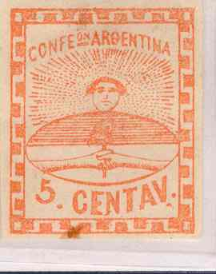
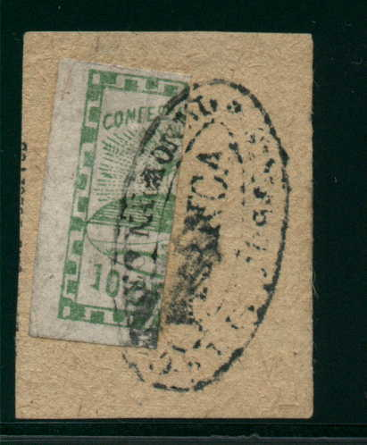
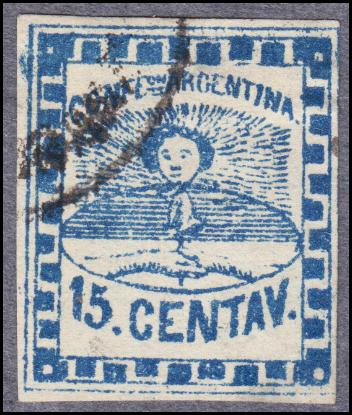
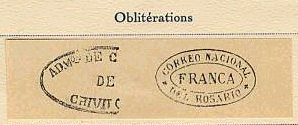
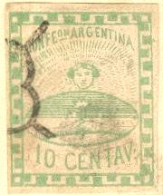
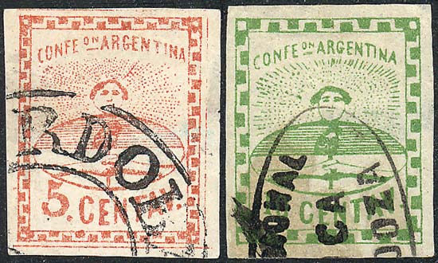
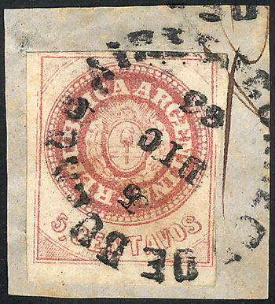
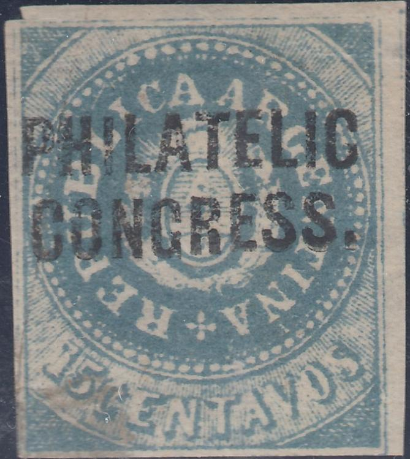
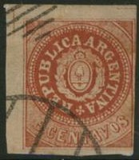
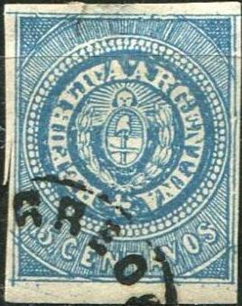

{kind=link}



Return To Catalogue -Argentine 1864-1891 - Argentine 1892-1920 - Argentine miscellaneous - Corrientes - Cordoba - Buenos Aires
Note: on my website many of the
pictures can not be seen! They are of course present in the
catalogue;
contact me if you want to purchase it.
A very nice website on Argentina stamps can be found at: http://www.seymourfamily.com/Stamp_Collecting.htm
(reduced sizes, the 5 and 15 c are genuine stamps)
5 c red 10 c green 15 c blue
Type II:
(Reduced sizes)
The 5 c exists in two types, one with small "5" and one with large "5". The frame is also different 6 ornaments instead of 4 at the top and bottom and 8 instead of 5 at the left and right. The values 10 c and 15 c were also prepared with this new frame, but they were never placed into use.

(Reduced sizes)
The 10 c exists bisected, used as a 5 c (see pictures above). I do not know if the above examples are genuine or not.
Value of the stamps |
|||
vc = very common c = common * = not so common ** = uncommon |
*** = very uncommon R = rare RR = very rare RRR = extremely rare |
||
| Value | Unused | Used | Remarks |
| Small value inscription | |||
| 5 c | * | ** | |
| 10 c | * | *** | |
| 15 c | ** | *** | |
Large value inscription |
|||
| 5 c | * | *** | |
| 10 c | * | - | |
| 15 c | ** | - | |
Many forgeries exist, examples:


(Reduced size)
In the 5 c forgeries above, note that the brick like decoration in the corners is not the same as in the genuine stamp. Moreover, the hands are holding a flower instead of a hat. I've also seen this forgery with a cancel constisting of parallel lines.


(Forgeries, reduced sizes)
In the 15 c forgeries above, the lines behind the head are not all directed towards the head. The cancel (Spanish spider cancel and lozenge) looks like bogus cancels to me. The thing that the hands are holding is definitely not a hat, but I do not know what it is supposed to be (a flower?). I've also seen the 10 c value of this particular forgery (see Bill Claghorns forgery site for a picture: http://members.tripod.com/claghorn1p/Argentina/Arg02x.htm).

The hair on this forgery is quite different from a genuine stamp.

The above stamp is a Fournier forgery! They are printed on thin ordinary brown paper and cancelled as shown below. I do not know any further distinguishing characteristics of these Fournier forgeries.
Cancels used by Fournier (taken from a 'Fournier Album'):

In the Fournier Album a forgery can be found cancelled with a "FRANCA" cancel in an eye-shaped double lined oval. It is listed under Equador however.
Fournier forgeries as found in the 'Fournier Album of Philatelic
Forgeries'

A bogus cancel "FRANCA" in an eye-shaped oval from
Parana.


Note that the above three forgeries all have a "BIMon DE
CORREOS ARREGONDA, REP"; this cancel also exists on
forgeries of Uruguay (see last image). Click here for more information about this
cancel.
I have been told that the next stamp is also a forgery:

More forgeries can be found on Bill Claghorn's forgery site, see for example: http://members.tripod.com/claghorn1p/Argentina/Arg02x.htm.
And another forgery with the top ornaments wrongly done together with a primitive forgery:


Images obtained from
http://www.seymourfamily.com/Stamp_Collecting.htm

Forgery made by the same forger who made the above 10 c forgery?

15 c forgery in the wrong color red!
The next stamp looks very suspicious (especially the cancel), forgery?:
(???)
These stamps are worth more cancelled than uncancelled. Therefore many forged cancels and even phantasy cancels exist both on genuine and forged stamps.

I think the above cancel must be the one mentioned in the book 'The forged stamp of all countries' by J.Dorn: it states that the cancel "CORREOS NATIONAL DEL FRANCA DEL ROSARIO" in a double oval is often forged.

Imitated and phantasy cancel on two 5 c stamps

Other forged cancels.
Not sure what this is....
(reduced sizes)
5 c red 10 c green 15 c blue
For the specialist: these stamps exist with or without accent above the "U" of "REPUBLICA". The 15 c without accent is very rare. The 5 c exists further in two types; one with small "5" and large "C" and another with large "5" and small "C". This last one also has the first "A" of "ARGENTINA" pointed at the top, it has been privately reprinted by Gibbons (see there). ATTENTION: the majority of stamps found in collections are these reprints, they are almost worthless!


Images obtained from
http://www.seymourfamily.com/Stamp_Collecting.htm, first stamp
broad 'C', no accent; second stamp broad 'C' with accent on 'U';
third stamp narrow 'C' no accent.
For the 5 c, the genuine stamps have 72 pearls in the circle, forgeries with 88 pearls exist. The 10 c has 78 pearls and the 15 c 71 pearls.
Value of the stamps |
|||
vc = very common c = common * = not so common ** = uncommon |
*** = very uncommon R = rare RR = very rare RRR = extremely rare |
||
| Value | Unused | Used | Remarks |
| 5 c | *** | *** | |
| 10 c | RR | R | |
| 15 c | RRR | RRR | |
| Reprints (all values) | vc | - | |



Typical cancels; "CORREO DE BUENOS AIRES",
"CONCORDIA" in blue ellipse, "ROSARIO" blue
cancel, "SAN JUAN" cancel and "CORDOBA
FRANCA" cancel.


Mute cancels: 6x6 lozengecancel of Gualeguay and 7x7 dots cancel
of Buenos Aires.
Stanley Gibbons of London (the same one from the catalogue!) acquired the plate of the 5 c value and made private reprints of it. According to 'The Forged Stamps of all Countries' by J.Dorn they can be recognized by the absence of shading in the cap and a worn appearance. These reprints thus also have 72 pearls, but they are on heavier paper and in the wrong shades of red. Gibbons also changed the value indication '5', to '10' and '15', however, in the genuine 10 c and 15 c stamps, the "C" of "CENTAVOS" is broad, while in these 'reprints' the "C" is the same as in the 5 c value. These reprints were made in 1870. It is interesting that my Stanley Gibbons 'Stamps of the World' 1972 catalogue mentions the following text: "Most unused specimens of Nos. 24, 16 and 19 are worthless imitations. The publishers of this catalogue do not want offers of these stamps". Examples of what I think are Gibbons 'reprints':


(Reduced sizes)

These reprints exist with "PHILATELIC CONGRESS." and
"POSTAGE STAMP EXHIBITION & CONGRESS BIRMINGHAM 5.15.PM
JU 8 1911" overprints.
These reprints/forgeries are also known as 'Lange' forgeries (Roberto Lange was the printer from which Gibbons obtained the plate of the 5 c stamp).
I've seen some 'Lichtenstein' reprints, probably from the same source (all with small 'C'), but in the colors black, gold and silver.


(I presume this stamp is a forgery, I have also seen the 5 c of
this particular forgery with similar cancel and uncancelled)
Fournier also offers forgeries of these stamps, I think he offered the Gibbons 'reprints'. He offers them in his 1914 pricelist for 1 Swiss Franc (all 3 values) as second choice forgeries. I've seen a stamp with a "CORREOS NACIONAL FRANCA DE MENDOZA" in an ellipse on such a 15 c reprint. This cancel can be found in 'The Fournier Album of Philatelic Forgeries', but under Colombia. In the Fournier Album a cancel with "FRANCA" cancel in an eye-shaped double lined oval can also be found. It is listed under Equador however. I've seen it on a 10 c reprint.
Page from a Fournier Album with Fournier forgeries.



The above forgery is the one described in 'The Spud Papers'. There are 81 pearls in the circle (in the genuine stamps there are 71 to 78 pearls). The hat is different from the genuine stamps and there is a larger space between the "E" and "N" in "CENTAVOS". The "O" of this word is small. Note the strange cancel consisting of parallel bars or part of an ellipse(?). I've also seen the 5 c of this forgery set cancelled with a pattern of dots.

Another forgery with a "CORREOS" cancel.


Forgery with a Uruguay cancel "ARREGONDO
REP-O-DEL-BRUG", next to it a forgery of Uruguay with
the same cancel.

Another forgery.
(Even perforated forgeries seem to exist!)
The forger Sperati has made a forgery of the 15 c value (apparently type 27 of the plate). There is a blue dot in the in the ray-pattern to the left of the "P" of "REPUBLICA".
Sperati forgery of the 15 c value, front and backside

Sperati forgery of the 15 c with the same "CORDOBA
FRANCA" cancel

Sperati forgeries and forged cancels of Argentine, blackprints.
Both cancels appear to have been used on this Sperati forgery
(Sperati also used manuscript cancels).
Probably another forgery with different letters, see for example
the "C" of "REPUBLICA".
For stamps of Argentine issued from 1862 to 1891 click here.
{kind=link}
{kind=link}
{kind=link}
{kind=link}
{kind=link}
{kind=link}
{kind=link}